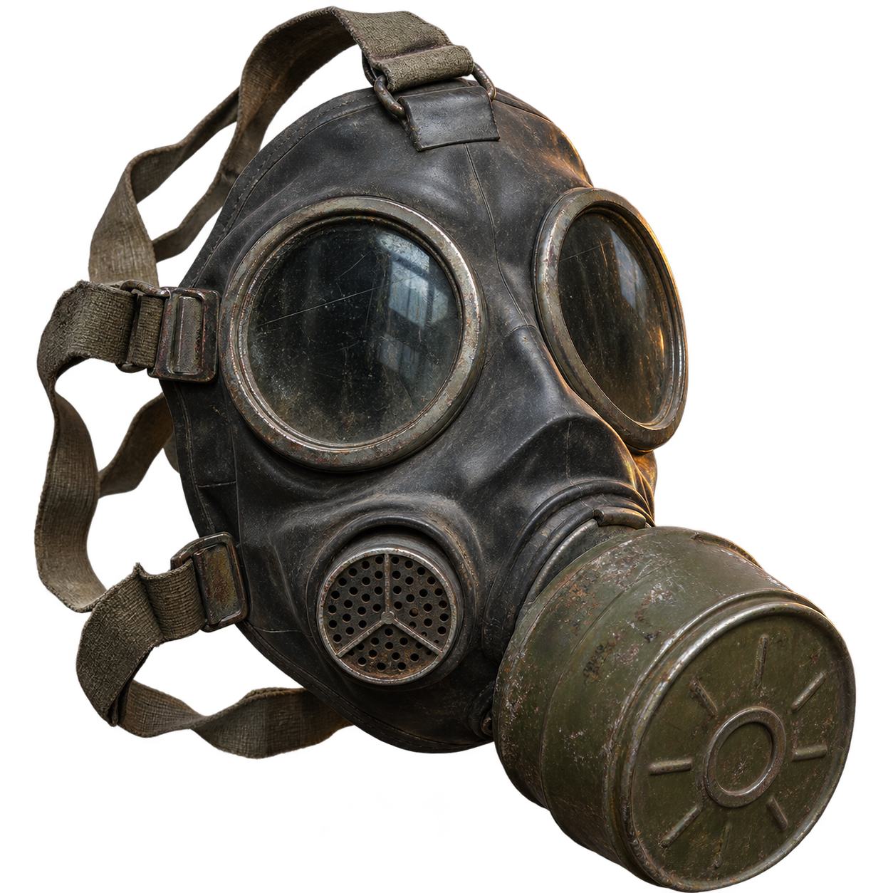
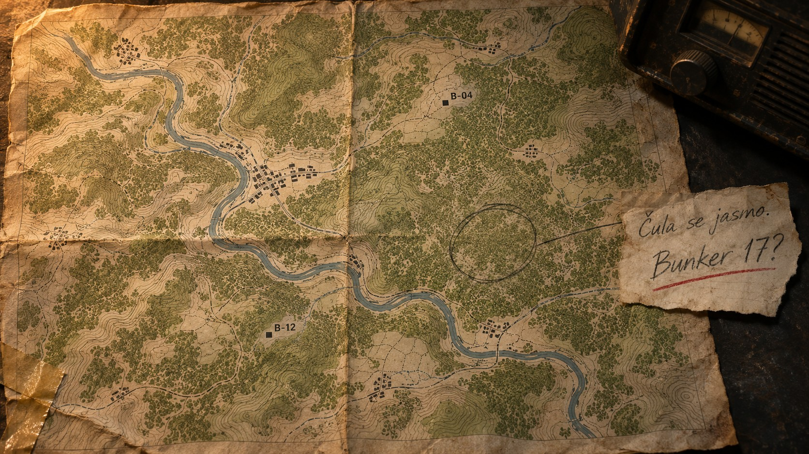

Viktor Živanović
- Web programiranje
- Pomoć programiranju
- Music
- Media
- Sound effects
- Trailer


One More Bunker je 2D piksel platformer u kojem prelaziš iz bunkera u bunker, savladavaš prepreke i skupljaš zalihe. Istraživanjem pronalaziš bolju opremu za borbu protiv zombija.
Svaka faza završava se borbom protiv čuvara bunkera. Pobedom dolaziš do zaliha neophodnih za preživljavanje do sledećeg vremenskog skoka.

Prve noći zombi apokalipse, dok grad tone u haos, zaraženi ugrize tvoju ćerku. Naoružani ljudi je odvode pre nego što stigneš da dođeš do nje. Ostaješ sam u bunkeru, bez ikakvog traga o tome gde su je odveli.
Godinu dana kasnije, dok ti zalihe ponestaju, kroz šum radija začuješ njen glas. Stiže da izgovori samo broj bunkera pre nego što se veza prekine. Pretražuješ stare mape, ali tog broja nema ni na jednoj.

Sa poslednjim zalihama napuštaš sklonište i krećeš kroz svet opustošen zarazom. Od napuštenih naselja do podzemnih bunkera, tražiš bilo kakav trag koji bi mogao da te odvede do nje. Sada znaš da je živa. Moraš da je pronađeš i izvedeš odatle pre nego što zaraza odnese i tebe.
TOK RAZVOJA PROJEKTA
Pogledaj kako One More Bunker dobija oblik, od prvog menija do novih protivnika.
Uskoro stiže ceo timeline.
KREATORI PROJEKTA
Ovo je ekipa koja je od nule osnovala The Last Ration (TLR) i osmislila One More Bunker.